1.3. Scenarios and Design Drivers#
1.3.1. Sizing and optimization process#
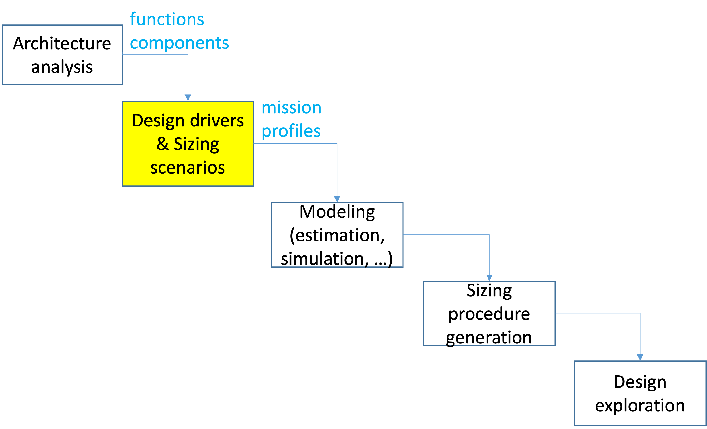
Description
After analysing the architecture of the system to be sized, the next step is to establish the working scenarios which risk to degrade the different components.These scenarios could be expressed as a set of operational points (for example Torque, Speed) or mission profiles (variable function of the time).
1.3.2. Sizing scenarios and design drivers concept#
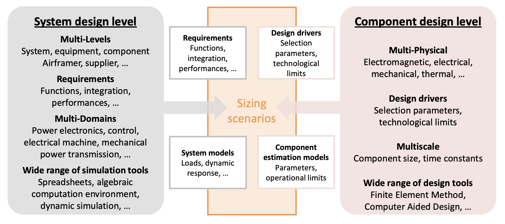
Description
After analysing the architecture of the system to be sized, the next step is to establish the working scenarios which risk to degrade the different components.These scenarios could be expressed as a set of operational points (for example Torque, Speed) or mission profiles (variable function of the time).
1.3.3. Case study: Aircraft spoiler#
To illustrate the notion of sizing criteria and sizing scenarios, we will use a flight control actuator, more precisely for spoiler surface, as an example.
1.3.3.1. Functions#
Move : Positions 0, 20, 50° (Hinge torque: 1000-2500 N.m)
No damage (structure and actuator) if spoiler blocking or on gust action
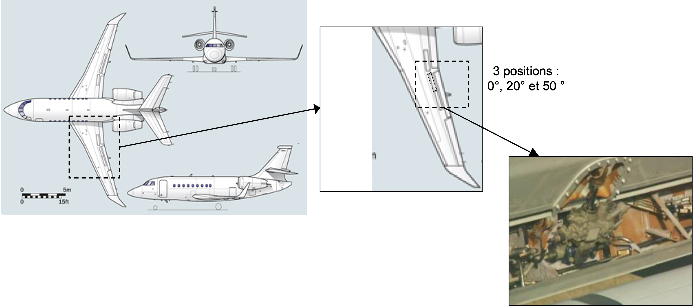
Description
The spoiler reduces the lift of the aircraft in order to start an approach towards the airport or to increase the action of the breaks on the wheels for landing. On the considered aircraft, the actuator will have to position himself on 3 different angle while working againts aerodynamic forces. These forces can be either positive (when surface fully deployed) or negative (when surface fully retracted). No damage must appear on the structure or actuator if jamming happens or when gust action occurs.
1.3.4. Architecture and components#
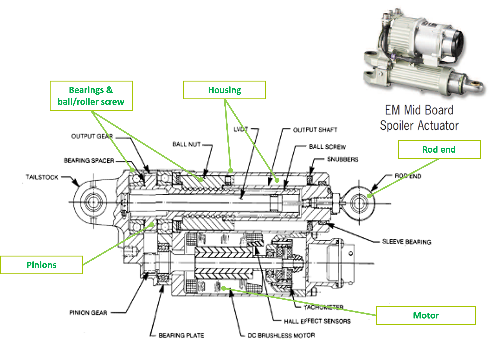
Description
Here is the architecture of the study case. It is based on an example of EMA (ElectroMechanical Actuator) for the Boeing 787’s spoiler designed and manufactured by MOOG.
It is composed of: mechanical components for effort transmision (Rod end, Rod, Housing), for power transmision ( ball screw, bearing, gear) and electro-mechanichal components such as a brushless motor.
1.3.5. Design drivers#
Components of the actuator have to satisfy:
Transient power demand - Performance → Prevents rapid damages (e.g. permanent deformation, rupture)
Continuous power demand - Endurance → Addresses gradual degradation (e.g., fatigue) and ensures reliable operation during service lifetime
Components of the actuator have imperfections:
Increase stresses on themselves (e.g , inertia) or on other components (e.g, efficiency)
Can create new critical cases (e.g, inertia and jamming) → Induced new design drivers
Sizing scenarios or sizing mission profiles should be determined in order to be representative of all these design drivers
1.3.5.1. Design drivers of mechanical components#
Mechanical components can deteriorate:
In a fast way, under the effects of a too important transient effort which can create localized stresses leading to a permanent deformation ou in the worst case a rupture.
In a gradual way, alternated efforts can reduce the component’s lifetime by creating microcracks which increase with the number of requests.
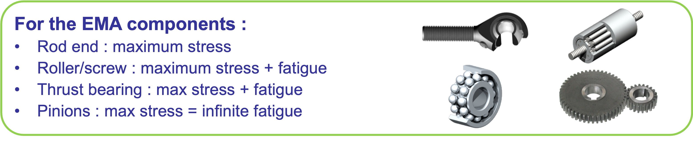
Description
For our example: we must be sure that all the components can take the maximal effort and determine the situation which generates this maximal effort. Fatigue is often computed for rolling elements using mission profiles that represent repetitive requests.
An other source of mechanical degradation comes from the vibratory environment or shocks during operating time.
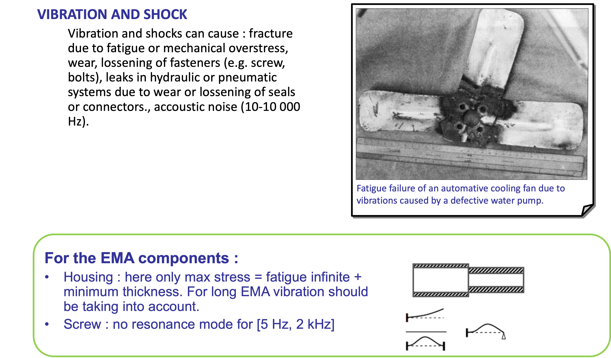
Description :open:
For the linear actuator: we need to be sure that the housing or the screw will not be subject to stress due to resonance mode on typical plane frequencies, between 5 Hz and 2 kHz. If possible, all resonance modes on this frequency range should be avoid or specific design must be undertaken.
1.3.5.2. Induced design drivers of mechanical components: losses & friction#
During sizing it is important to take into account the main parasitic aspect of components in terms of power transmission. For mechanical components efficiency and friction are important.
First level of modeling : constant efficiency (direct and inverse) with speed and torque
Second level : friction increases at low speed 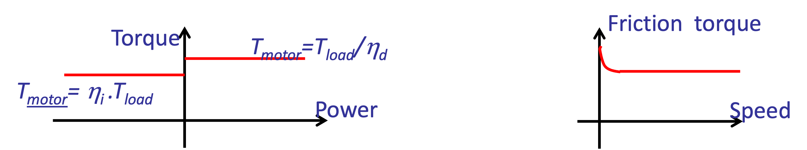
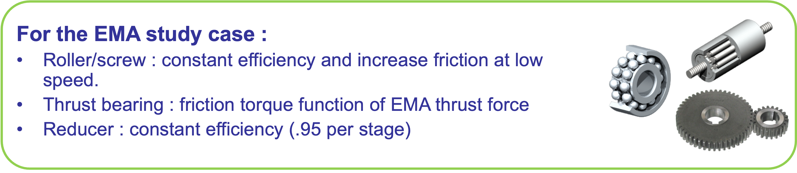
Description :open:
The mechanical power transmission components (worm gears, ball/screw systems, …) have imperfections such as friction which reduce efficency. These frictions increase the torque the motor has to transmit and therefore have an impact on component choice. Power quadrants and speed have an important effect on friction or efficiency computation.
In our example: we could model our ball/screw system with a constant efficiency. except when the speed is zero, in which case we’ll increase the friction. It is interesting to underline that the friction due to mechanical stops inside the ball/screw system depend on the effort given by the jack.
1.3.5.3. Design drivers of electrical components#
For electrical components, the current and thermal effects can induce:
magnetic fields which can demagnetize the magnets… With new magnets the odds are lower.
Induce an excessive magnetic field which can create a saturation at teeth level where stands the winding.
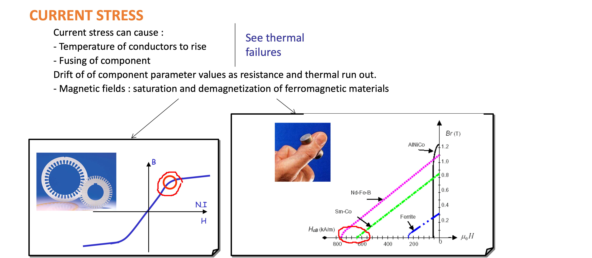
For the EMA study case:
Brushless motor: max torque due to saturation (teeth)
Description :open:
In our example, we will consider that the maximum transient torque of the machines will be limited by the sheet‘s magnetic saturation.
The electrical current generates copper losses which heat the motor. Excessive temperature can demagnetize the magnets. The higher is the temperature, the shorter is the lifetime of the copper wires’ insulation.The link between lifetime and temperature is given on the following graph and depends on the insulation type.
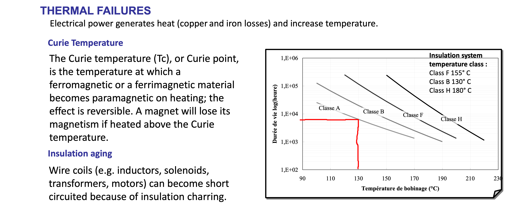
For the EMA study case:
Brushless motor: continuous torque and max temperature due to thermal aspect (need of a thermal model)
Description :open:
In our study, we will consider that the mean torque will be limited by the winding temperature. A thermal model can be useful in order to be sure of a proper working.
1.3.5.4. Induced design drivers of the electrical components#
Electrical motors have imperfections such as the kinetic energy stored in the rotor inertia which:
Increases electromagnetic torque : critical issue for high dynamic application (e.g., TVC )
High stress when jamming or stop : reflected mass can be very high
Thr copper and iron losses have:
Effect on sizing of power electronics
Effect on housing design for frameless motor
For the EMA study case:
Brushless motor: rotor inertia
Brushless motor: losses
1.3.6. Sizing scenarios and mission profiles#
Sizing scenarios make the link between the application and the design criteria of the system components.
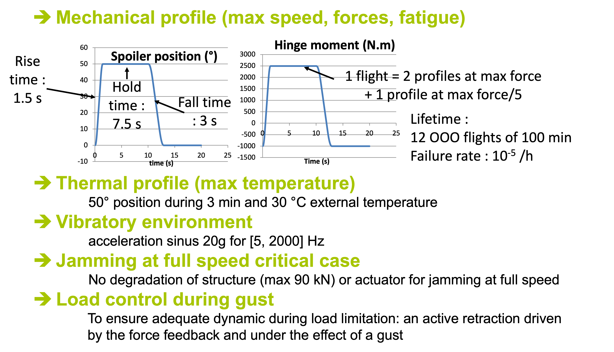
Description :open:
Example of sizing scenarios for our study case are:
Under mechanical aspects: a displacement profile which describes expansion/retraction movements and the associated torque. This profile give an estimation of the maximum efforts on the entire power chain. Repeated over 12 000 flights give a specification of lifetimes.
Under thermal aspect: a critical case can be represented with an important deflection, that means a high torque which generate important losses in the motor, with an important holding time and high external temperature (low altitude in a warm country).
Vibratory aspects can be considered by using vibratory test standards for a given amplitude and frequency.
The harmful aspect of inertia is took into account in a critical case such as the jamming of the spoiler at full deflection speed (implying maximum stored kinetic energy).
The effort limitation function is represented by a sudden gust scenario.
1.3.7. Verification matrix#
To be sure that all design criterias are covered, a verification matrix can be used with:
On one side: the global functions of the system, the design criteria of the components
On the other: the different design scenarios
Each line must be linked to at least one scenario.
Other example of representation: the Thrust Vector Lab gives an other way of representation.
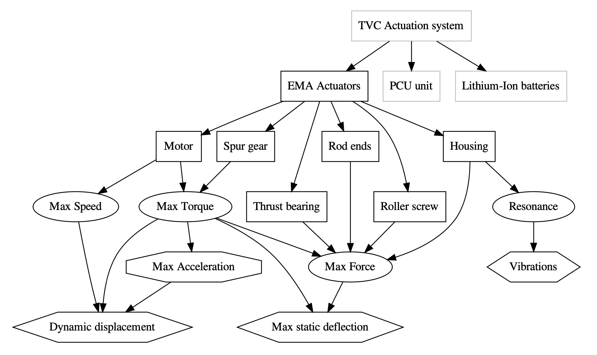